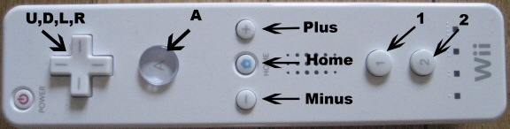
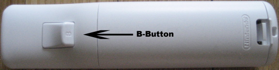

Introduction
The following consists of a basic guide to setting up communications between a Wiimote and Csound, allowing the Wiimote to become an input device to control real-time performance. With its many buttons and motion sensing accelerometers, the Wiimote is capable of combining the features of triggers and joysticks during performance. The communication between the Wiimote and Csound is done via Bluetooth and a free program called GlovePIE. I will focus my discussion on the coding needed in GlovePIE and Csound to facilitate the communication. Reading the GlovePIE documentation as well as the Csound manual OSC entries is strongly recommended, as I will refrain from repeating too much of that information.
In addition, although GlovePIE is also capable of
communicating via MIDI, my lack of experience with
MIDI led me to explore the OSC communication. I also
feel that OSC is better suited to handle the high
speed and quantities of data transfer that the Wiimote
requires.
Therefore, this article will focus specifically on
OSC.
Materials
The following are necessary elements:
The Wiimote - A standard Nintendo Wiimote, which can be purchased at most electronics stores. Current price is $39.99. The Wiimote's controls consist of eleven buttons, and three accelerometers, which may all be independently coded to control various parameters in Csound. The addition of the Wii Nunchuk is not necessary, but the addition of its joystick, two buttons and three accelerometers may be desirable. Although I do not have one yet, I will briefly discuss the coding used with the Nunchuk
USB Bluetooth Adapter - These can be picked up for $20-40. The one I am using is the Jabra A320s. The GlovePIE documentation recommends using the Blue Soleil software, but I am using the software that came with the adapter with minimal trouble. If your computer already has Bluetooth capabilities, then this is not necessary.
GlovePIE A Programmable Input Emulator which can be downloaded at:
http://carl.kenner.googlepages.com/glovepie_download
GlovePIE utilizes scripts to translate inputs from devices into various other forms. It was originally designed to emulate joysticks and facilitate usage of VR gloves with computers. GlovePIE now features MIDI and OSC communication.
Csound - Of course you'll need Csound. Any version with OSC capabilities will work, but I am currently using Version 5.05.
OSC Sending and Receiving
After installing GlovePIE, the first steps involve setting up your GlovePIE script and Csound CSD to send and receive OSC messages. In the basic setup, GlovePIE will be the sender and Csound will be the receiver. Setting up GlovePIE to send OSC messages requires the following code:
OSC.port = 50000
OSC.ip = "localhost"
OSC.broadcast = false
These lines set up the port on which the messages will be sent, the IP address, and whether or not the messages will be broadcast throughout a local network. The above code will keep the messages inside the local computer without sending them outward.
Csound will require the following line of code to receive the messages:
gilisten OSCinit 50000
Putting this line in the orchestra's header will initialize the reception of OSC messages on the designated port. Later code inside instruments will designate specific messages.
The Wiimote
The Wiimote's eleven buttons and three accelerometers can each control individual variables, but coding is required for each of the controls you wish to use.
Buttons
Shown below are the eleven buttons that are currently usable with GlovePIE:
A, B, Up, Down, Left, Right, Minus, Plus, Home, 1 and 2


These eleven buttons output either true or false data. In order to send this data to Csound, I found it necessary to translate the True/False into 1/0 within the GlovePIE script. This would be accomplished for the A button with the following code:
if Wiimote.A Then var.Wiimote.a = 1 else var.Wiimote.a = 0 endif osc.wii.a = var.Wiimote.a
In the first line "Wiimote.A" is GlovePIE's way of designating the button. Other buttons would be coded "Wiimote.B", "Wiimote.Up", etc.". The following four lines store a 1 or 0 in a variable which will be output by the last line's OSC message. This section of code will need to be repeated for each of the eleven buttons.
Within a Csound instrument you will need the following code to receive the above outputted message:
k1 OSClisten gilisten, "/wii/a", "f", ka
This message will store the output into the K-rate variable "ka". (This variable and all other outputs will need to be initialized at the beginning of the instrument.) Note that the "idest" parameter of the OSClisten
opcode matches the GlovePIE script's osc variable,
with slashes substituted for the dots. Again, this code will need to be repeated for each of the other buttons you wish to use. All eleven buttons might look something like this:
k1 OSClisten gilisten, "/wii/a", "f", ka k2 OSClisten gilisten, "/wii/b", "f", kb k3 OSClisten gilisten, "/wii/up", "f", kup k4 OSClisten gilisten, "/wii/down", "f", kdown k5 OSClisten gilisten, "/wii/left", "f", kleft k6 OSClisten gilisten, "/wii/right", "f", kright k7 OSClisten gilisten, "/wii/minus", "f", kminus k8 OSClisten gilisten, "/wii/plus", "f", kplus k9 OSClisten gilisten, "/wii/home", "f", khome k10 OSClisten gilisten, "/wii/one", "f", kone k11 OSClisten gilisten, "/wii/two", "f", ktwo
Accelerometers
The Wiimote's accelerometers are coded similarly to the above, but the output values are related to the forces that the Wiimote experiences, rather than true/false data. The three accelerometers are oriented in the X,Y and Z directions with X being left/right, Y being up/down and Z being front/back. Depending on the code used in GlovePIE, the forces can be output as G-forces or as Raw forces measured in Meters/Second/Second.
To output G-force data the following code will be needed in GlovePIE:
osc.wii.x = Wiimote.gx osc.wii.y = Wiimote.gy osc.wii.z = Wiimote.gx
This code will output values roughly in the ranges of -5 to +5. It might be possible to get higher G-forces, but even with violent shaking I didn't see anything above 5. Outputting Raw Force data requires substituting "RawAccX" for "gx" in the above code, thus:
osc.wii.x = Wiimote.RawAccX
The values outputted by the RawAccX code will be in the range of -45 to +45. Both of the above methods do not factor out for gravity, so a Wiimote sitting on a table will output a 1(or 9.8) for the Y-axis. (X-axis if on its side, Z-axis if standing on end) There is, however, the RelAccX code which attempts to remove gravity, thus outputting all zeros when the Wiimote is at rest. There is some loss of accuracy, and the values range from about -50 to +50.
All of the above codes for the accelerometers will need to be accompanied by the following code in Csound:
k12 OSClisten gilisten, "/wii/x", "f", kx k13 OSClisten gilisten, "/wii/y", "f", ky k14 OSClisten gilisten, "/wii/z", "f", kz
Pitch and Roll
Utilizing our good friend math, the Wiimote is also capable of extrapolating the pitch and roll angles from the X,Y and Z accelerometers. Yaw detection, however, requires the sensor bar that comes with the Wii, so this is less usable with Csound. The Pitch and Roll codes output values in the ranges of -90 to +90 and -180 to +180 respectively and are measured in degrees. They are coded in GlovePIE as follows:
osc.wii.pitch = Wiimote.Pitch osc.wii.roll = Wiimote.Roll
Similar to previous code, the Csound side of this would look like:
k15 OSClisten gilisten, "/wii/pitch", "f", kpitch k16 OSClisten gilisten, "/wii/roll", "f", kroll
The Nunchuk
The Wiimote's optional Nunchuk increases the number of control variables possible. The Nunchuk features two buttons(C and Z), a Joystick(X and Y), and three Accelerometers(X,Y and Z). These are coded just like all of the previous examples with one difference. In GlovePIE, identifying the Nunchuk's inputs requires adding "nunchuk" into the code as such:
Wiimote.Nunchuk.JoyX
They can then be treated similarly to the main Wiimote's outputs. See the GlovePIE documentation for more clarification.
Using the Output Variables in Csound
All of the values that the Wiimote puts out are easily used within Csound instruments. The buttons can be used to trigger samples by using something along these lines:
ktrig trigger ka,1,0 schedwhen ktrig,insnum,kwhen,kdur,[ip4],...
or as gates for the samphold opcode:
kres samphold asig, kup
The outputs of the motion sensing codes can easily be scaled or biased to fit various applications. One of the accelerometers, for instance, can be used to control the frequency of an oscillator by biasing it to a center frequency and scaling it to the range of desired frequencies:
kx = (kx*4)+400 ; yields a center frequency of 400 with a range of +/- 20Hz
; if kx is measured in G-forces
The Pitch or Roll sensing could easily be used to control the panning of a signal:
kdegree = abs(kpitch) a1,a2 locsig asig, kdegree, kdistance, kreverbsend
In addition, GlovePIE is capable of many standard programming features that can be used to expand on the output capabilities. More experienced programmers will probably find this more useful than myself.
Final Notes
This has been a very introductory and limited discussion of using GlovePIE to communicate between a Wiimote and Csound, but the creations that are possible with this combination could be endless. For one, GlovePIE can be used in a similar fashion with many different input devices, such as mice, joysticks, the keyboard, and even a virtual reality glove. GlovePIE is also capable of transmitting MIDI messages with the addition of the program MidiYoke. Basically, GlovePIE's OSC and MIDI capabilities make it a very useful tool for Csound Users. As before, I strongly recommend reading the GlovePIE documentation, as it will provide many answers and insights that I have not been able to provide here. I can provide, however, a basic GlovePIE script and Csound CSD that should help you get on your way. The following CSD utilizes the Wiimote’s A,B and Minus buttons to trigger three simple oscillator instruments. The pitch for each of the instruments is set, but the amplitude of a 5 Hz vibrato is sampled from the X,Y and Z axes. This value is sampled when the respective trigger fires and is set for the event using the i( ) opcode. In addition, the panning of each oscillator is set in a similar manner using the roll values which have been scaled to values from 0 to 1.
To experience the effect of the Wiimote on output, first press the A,B and Minus buttons while holding the Wiimote as still as possible. Next, press the A-button while moving the Wiimote side-to-side. Do the same with the B-button while moving the Wiimote up and down, and then with the Minus-button while moving the Wiimote front-to-back. As you can see this is a pretty simple example of the Wiimote’s capabilities, but feel free to experiment. Change which variables the axes control. Use the motion sensors to fire the triggers. The possibilities are endless.
Links/References
- Csound Users Manual, http://sourceforge.net/projects/csound, http://www.csounds.com/manual
- GlovePIE, http://carl.kenner.googlepages.com/glovepie, documentation is included in help menu.